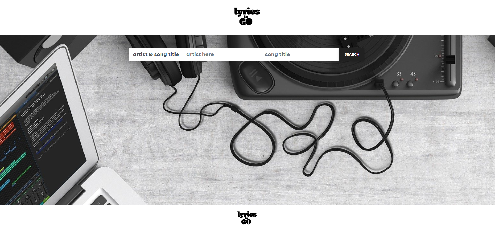
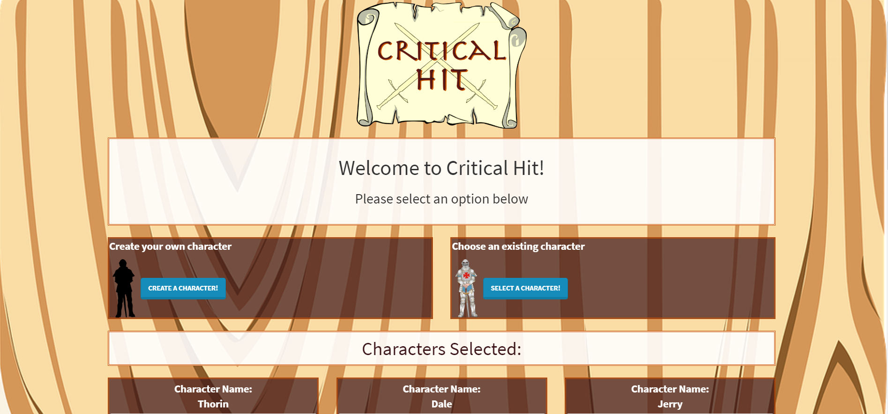

-

Lyrics To Go
This app uses api's to obtain information from a user search and display that information to the user, in a clean, concise manner. This project was my first collaborative effort with fellow developers completed using a Github repo. To use this app, please click the link:
Lyrics-To-Go -

Critical Hit
Critical hit is a character generator that uses handlebars to create the html, mysql to store the data, as well as sequelize to handle the communication between the database and the client. This app is deployed using Heroku. This app offers a basic layout that allows users to create characters for role playing games. It also allows users to select speciific characters that are then appended to the welcome page, giving the users easy access to characters that they use often.
Critical Hit -

Weather Dashboard
Using the weather dashboard app, the user can search a city for the current weather, as well as the 5 day forecast. This app makes two GET requests to a weather api to obtain this information. Once a city is searched, the app will save that search as a button below the original search field. To view the weather for that city again, the user simply needs to click the button that was created. The weather app can be found using the following link:
Weather Dashboard